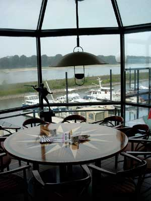

| Restaurant "Haus am Rhein" |
|  Zum
Wasser-Sport-Verein Düsseldorf gehört auch das Traditionsrestaurant "Haus am
Rhein". Vom gemütlichen, mit wassersportlichem Ambiente eingerichteten Restaurant
geht der Blick stromaufwärts zur Düsseldorfer Stadt-silhouette, während sich dem
Besucher rhein-abwärts eine unverbaute niederrheinische Flusslandschaft erschließt.
Von der in den Übergangszeiten beheizten Terrasse kann der Gast abends bei schönem Wetter den Sonnenuntergang genießen. Das Pächterehepaar
Iva und Tommy Culumovic bietet eine abwechslungsreiche und schmack-hafte
Küche, die je nach Jahreszeit durch Fisch-, Pilz-, Wild- oder
Spargelgerichte ergänzt wird. An den Wochentagen werden mittags drei
preis-werte Gerichte angeboten. Nachmittags kann man bei Kaffee und
Kuchen dem Treiben der Ruderer, den Booten und Yachten im Hafen und den
Schiffen auf dem Rhein zuschauen. |